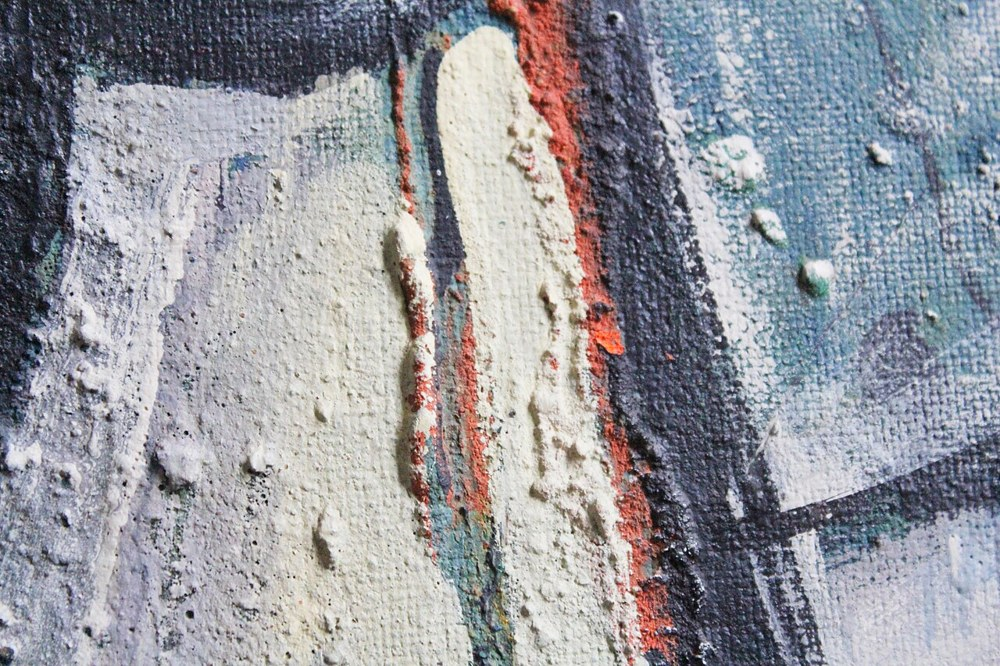

임파스토 (Impasto)
검수 완료

쉽게 풀면
물감을 두껍게 쿡쿡 발라서, 표면이 울퉁불퉁하게 보이도록 만드는 그리기 기법이다.
왜 중요한가
임파스토는 물감을 두껍게 발라 붓이나 나이프 자국이 입체적으로 남는 기법으로, 렘브란트의 후기 초상, 반 고흐, 수틴, 아우어바흐, 아니젤름 키퍼에서 회화의 물질성과 작가의 신체적 흔적을 전면화하는 수단이었다. 베네치아의 콜로리토 전통에서 티치아노의 후기 작업이 선례이며, 그린버그가 말한 회화의 물질적 자기지시성, 액션페인팅의 몸짓 강조, 그리고 임파스토가 사진으로 전달되지 않는다는 점에서 원본 관람 가치를 논할 때 인용된다.
어떤 절차인가
임파스토(impasto)는 물감을 표면의 한 구역에 두껍게 얹어, 붓이나 팔레트 나이프 자국이 보일 만큼 두텁게 바르는 기법이다. 물감을 캔버스 위에서 직접 섞기도 한다. 마르면 질감이 생겨 물감이 캔버스에서 튀어나오는 것처럼 보인다. 단어는 이탈리아어로 「반죽」, 「혼합물」을 뜻하며 「반죽하다」를 뜻하는 impastare, 「풀」을 뜻하는 pasta와 관련된다.
언제 쓰고 무엇을 얻나
- 매체: 유화는 되직하고 천천히 마르기 때문에 전통적인 매체이다. 아크릴은 헤비 보디 젤을 섞어 쓸 수 있다. 수채와 템페라는 얇아서 두껍게 하는 첨가제 없이는 알맞지 않고, 파스텔은 부드러운 파스텔을 종이에 세게 눌러 제한된 임파스토 효과를 낼 수 있다.
- 렘브란트와 베르메르는 옷 주름과 보석을 보여 주려고 섬세한 부분과 대비해 썼다. 티치아노는 렘브란트의 임파스토 사용에 영향을 준 인물로 언급된다.
- 반 고흐는 「별이 빛나는 밤」처럼 미적 효과와 표현을 위해 자주 썼다. 인상주의자들은 화면 전체를 풍부한 임파스토 질감으로 덮었다. 추상표현주의의 Hans Hofmann, Willem de Kooning, Jackson Pollock은 그리는 행위를 기록하려고 널리 썼고, Frank Auerbach는 그림이 거의 입체가 될 만큼 두껍게 썼다.
논문에는 이렇게 적는다
- 매체(유화, 아크릴 젤)와 도구(붓, 팔레트 나이프)를 적고, 두께와 질감이 보이는 구체적 작품을 지명한다.
- 글레이징과 함께 쓰는 경우를 구분한다. 글레이즈는 마른 불투명 층 위에 올린 얇고 투명한 기름진 물감층이며, 빛이 글레이즈를 통과해 아래층에서 반사되며 빛나는 효과를 낸다. 글레이즈는 두껍거나 질감 있는 물감과 짝지어 쓰이기도 한다.
- 「기름진 층을 마른 층 위에」(fat over lean) 원칙은 갈라짐을 줄이는 데 도움이 된다고 소개된다.
논문에서는 이렇게 쓰입니다
실제 논문에서
국내 학술지 논문에서 이 용어가 쓰인 문장을 그대로 옮겼다. 제목·학술지·연도와 원문 링크를 함께 적었다.
“실증적 연구로는 빈센트 반 고흐의 표현기법과 네일아트 디자인을 융합하여 실제 네일 팁에 디자인을 도출하였으며 선묘법, 색채기법, 임파스토 기법에 따른 네일아트 디자인을 도출하였다.”
빈센트 반 고흐의 표현기법을 융합한 네일아트 디자인 연구, 문화와융합, 2023 · KCI 한국학술지인용색인 · 원문 보기 ↗
예시 문장
아래 예문은 용어의 쓰임을 보이려고 만든 것으로, 실제 논문 문장이 아니다.
임파스토는 안료의 물리적 질감을 이용해 주변광을 반사시킴으로써, 그려진 표면에 촉각적이고 조각적인 차원을 더한다는 뜻이다.
두껍게 바른 물감층이 시각적 입체감과 빛의 산란에 미치는 영향을 다룬 문장이다.
조금 더 깊게 보면
임파스토는 글레이징과 대립하는 기법이 아니라 함께 쓰이는 경우가 많으며, 렘브란트는 밝은 부분에 임파스토를 쓰고 어두운 부분에 글레이징을 겹쳤다. 두꺼운 물감층은 균열·처짐·건조 문제로 보존이 어려워 반 고흐 작품의 색 변화와 표면 손상이 연구 주제이다. 임파스토를 작가의 '감정'이나 '진정성'의 직접 표현으로 읽는 것은 낭만주의적 해석이며, 그 자체가 학습된 양식적 관습이라는 점을 함께 봐야 한다. 렘브란트는 말년 자화상에서 이마나 장신구 부분에만 두꺼운 임파스토를 집중시켜, 빛이 실제로 반사되는 물리적 하이라이트 효과를 노렸다.
주의할 점
임파스토는 반 고흐의 후기 작품처럼 표현적 붓질과 결합되는 경우가 많지만, 렘브란트의 초상화처럼 세부 질감(예: 보석) 묘사를 위해 국소적으로 사용되기도 한다.
임파스토는 물감을 두껍게 쌓아 빛을 물리적으로 산란시켜 질감을 만드는 기법으로, 평평한 채색으로 명암을 표현하는 일반적 붓질과 달리 화면에 실제 요철이 남는다는 점에서 구별된다.
헷갈리기 쉬운 용어
| 용어 | 한 줄 설명 |
|---|---|
| 임파스토 | 물감을 두껍게 올려 질감을 남기는 기법 |
| 글레이징 | 마른 층 위에 투명한 얇은 층을 올리는 기법 |
| 유화 기법 | 유화에서 쓰는 여러 기법의 총칭 |
| 액션 페인팅 | 그리는 행위의 흔적을 드러내는 회화 |
| 후기 인상주의 | 인상주의 이후의 회화 경향 |
참고 문헌
- Wikipedia contributors. (n.d.). Impasto. Wikipedia.
- Wikipedia contributors. (n.d.). Glaze (painting technique). Wikipedia.